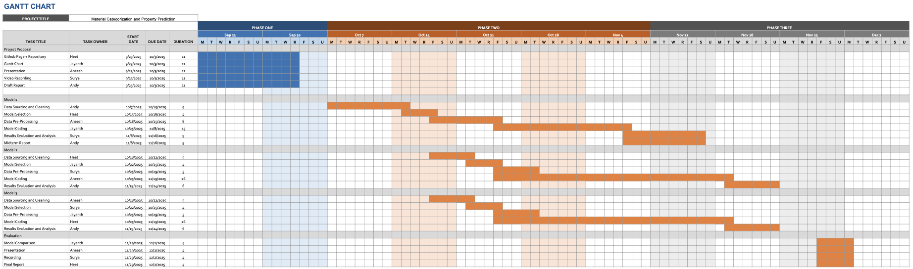

Introduction & Background
Polymers are widely used in various applications, with glass transition temperature (Tg) being one of the most critical properties in engineering applications. Tg determines the dependence of mechanical properties on temperature and affects everything about the polymer, from its flexibility and durability to its optimal operating temperature range. [1]
Polymer design spaces are massive, and manual experimentation has never been an efficient way to determine the properties of potential polymers. Recent machine learning approaches have seen great success in polymer property prediction. [2], [3], [4] Our project aims to replicate and build upon this success, contributing to efficient polymer materials discovery by predicting glass transition temperatures and property classes of potential polymers given their structure.
Polymers can be categorized in a variety of ways. Our dataset contains 21 distinct polymer class labels, and below, we provide example polymers for each class. It is important to note that, due to the complexity and diversity of many polymer structures, individual polymers can often belong to multiple classes simultaneously.
Polymer Class Examples
Our project utilizes the “Extra dataset with SMILES,Tg,PID,Polimers Class” dataset, hosted on Kaggle and originally sourced from PoLyInfo. [5], [6]
Dataset Overview:- 7,174 distinct monomer compositions.
- SMILES string representation for each polymer structure.
- Transition temperatures ranging from below -100°C to over 500°C.
- Multilabel classification representing 21 distinct polymer classes:
- Polyacrylics
- Polyamides / Polythioamides
- Polyanhydrides / Polythioanhydrides
- Polycarbonates / Polythiocarbonates
- Polydienes
- Polyesters / Polythioesters
- Polyhalo-olefin
- Polyimides / Polythioimides
- Polyimines
- Polyketones / Polythioketones
- Polyolefins
- Polyoxide & other polyethers…
- Polyphenylenes
- Polyphosphazenes
- Polysiloxanes / Polysilanes
- Polystyrenes
- Polysulfides
- Polysulfones & organosulfurs…
- Polyureas / Polythioureas
- Polyurethanes / Polythiourethanes
- Polyvinyls
Literature Review
Prior work has demonstrated that machine learning algorithms can effectively predict polymer properties. The most successful methods reported in literature include:
- Random Forests: Proven effective for polymer property prediction with robust performance on diverse datasets. [7], [8]
- Gradient Boosting: Successfully applied to capture non-linear relationships in polymer structures. [9], [10]
- Support Vector Machines: Demonstrated high accuracy in various polymer classification tasks. [11], [12]
A common trend in contemporary literature involves an initial feature extraction step, where polymer representations are converted into numerical descriptors that capture their elemental, topological, and physical properties. Many studies also utilize dimensionality reduction, coupled with domain expertise, to narrow down the set of valuable features, thereby reducing the problem's dimensionality. Our current methodology follows this wisdom.
Problem Definition
Problem: Build a supervised machine learning model to predict the glass transition temperature and the polymer class of a polymer from its SMILES string.
Motivation: Experimental discovery of glass transition temperatures is time-consuming. Accurate prediction will accelerate polymer design, enabling rapid discovery of polymers while reducing resources spent on physical experimentation. This approach promotes efficiency and sustainability in materials science by minimizing the need for lengthy and costly lab work. [2], [3]
Methods
Exploratory Data Analysis
A frequency plot of the glass transition temperature distribution indicates that it can be modeled using two summed Gaussian curves. This shape suggests that the dataset likely contains two separate groups of polymers with contrasting thermal behavior. This bimodal behavior has interesting implications for modeling Tg, as it indicates the existence of distinct classifications whose shared intragroup molecular motifs have similar effects on the thermal properties of their respective classifications.
The glass transition temperature distribution by polymer class is similarly revealing. The intraclass median varies widely, ranging from below 0 °C to over 200°C across different polymer classes. We hypothesize that the bimodal distribution of glass transition temperatures reflects two distinct categories of classes. For example, polymer classes containing nitrogen have relatively higher median glass transition temperatures and belong to the higher Tg category. In comparison, the three hydrocarbon polymer classes all have comparatively lower median glass transition temperatures and belong to the lower Tg category.
Glass Transition Temperature Distribution
The bimodal distribution suggests two distinct polymer categories.
Polymer Class Breakdown
Class imbalance is evident across the dataset. Elemental composition and structural motifs plays a clear role in glass transition temperatures.
However, polymer class frequencies in our dataset present a significant challenge: a strong class imbalance. For example, there are nearly 3000 polyoxides/ethers/acetals, but fewer than 100 polyhalo-olefin samples. This imbalance means it will be challenging to fit generalizable models, as our models will likely perform significantly better on abundant classes but poorly on underrepresented classes.
Data Preprocessing & Featurization
A single polymer can belong to multiple class labels. To handle this complexity, we one-hot encoded each polymer class, transforming polymer class assignment into a 21-label multilabel classification task. This approach addresses the significant class imbalance present in the dataset (e.g., nearly 3,000 polyoxides/ethers/acetals vs. fewer than 100 polyhalo-olefin samples).
To generate numeric features from SMILES strings, we utilized RDKit's molecular descriptors, including:
- Molecular weight (MolWt) of the monomer.
- Kier Phi value (Phi) quantifies a molecule's shape and branching.
- Spatial score (SPS) ranks by spatial complexity.
- Topolgical polar surface area (TPSA) determines the degree of chemical polarity.
- As well as 213 other initial features from RDKit's feature generators
These generated features are further normalized to have zero mean and variance 1.
Dimensionality Reduction
- Step 1: Removed sparse and disproportionately large features → 204 features
- Step 2: Removed features with variance < 0.1 → 133 features
- Step 3: Graph-based correlation pruning (|ρ| ≥ 0.85), preserving key features (molecular weight, Kier-Phi value, spatial score) → 84 features
- Step 4: Selected top 40 features by weighted variance contribution via PCA
We start by removing features with low variance. Any features with unnormalized internal variance lower than 0.1 were deemed “too unimpactful” and dropped.
We then identified all pairs of features with an absolute correlation coefficient greater than 0.85; a high absolute correlation coefficient between two features indicates that one of the features is relatively redundant. The problem of optimally pruning these redundant pairings can be treated as a graphical problem. We form a graph where each pairing is an edge connecting the corresponding features, which serve as nodes. We drop nodes from the graph until all remaining nodes are unconnected. As part of applying our domain expertise, we prioritized the molecular weight, Kier-Phi value, and spatial score as key features that would never be dropped from the network. The change in feature relationships is well-represented in this correlation matrix visualization, and it is clear that the features after our graph-based pruning are significantly less correlated.
Effects of Pairwise Feature Removal

After our network-based feature removal, the remaining features are significantly less correlated.
A pyviz rendering of our polymer feature graph with labelling is also included here to illustrate the pruning process.
Feature Correlation Network
Interactive network visualization showing highly correlated features. Zoom-in and drag the nodes around to get a better understanding of the network structure.
We performed principal component analysis to examine the impact of the 84 remaining features. The scree plot revealed that just three components can explain more than 90% of the variance. The first two principal components showed clear trends with glass transition temperature, with lower Tg values in the lower-left quadrant and higher Tg values in the upper-right quadrant.
PCA Analysis: PC1 vs PC2
Clear trends with glass transition temperature.
Scree Plot: Variance Explained
Three components explain >90% of variance.
While these principal components indicated that our features were appropriately correlated to the data, we want our model to be fit with the original features. We ranked these features by weighted variance contribution to find the most impactful features. With our relatively large dataset of over 7,000 polymers, we selected the top 40 most impactful features, which serve as our final feature set for both regression and classification models.
Features Sorted by Weighted Variance
These features shed light on molecular characteristics most correlated with Tg.
- MolWt: Molecular weight of the monomer.
- SlogP_VSA#: Surface area partitioned by with SlogP (octanol/water partition). Relates to the hydrophobicity of the surface.
- EState_VSA#: Electrotopological state area partitions (electron density, hybridization, resonance, etc.), indicative of reactivity and polarity.
- SMR_VSA#: Molar refractivity area partitions, important for understanding polarizability and intermolecular forces.
- PEOE_VSA#: Orbital electronegativity charge partitions, characterizes charge distribution surfaces (dipole interaction, hydrogen bonding, etc.).
- Chi3v: Estimator based off of valence calculations for atom "paths" of length 4 in the molecule graph.
- Phi: The Kier Phi value qunatifing branching and flexibility.
- NOCount: The number of NO groups present in the monomer.
- SPS: Expresses the spacial complexity of the monomer.
Model Implementation
We split the dataset into training and testing sets with an 80:20 ratio. For both regression and classification tasks, we implemented random search cross-validation to optimize hyperparameters.
Regression Models: Random Forest Regressor and Gradient Boosting Regressor for predicting glass transition temperature
Classification Models: Three approaches including independent and dependent Random Forest classifiers, and an independent Gradient Boosting classifier for multilabel polymer class prediction
Results and Discussion
Regression Performance
Random Forest Regression
MAE: 28.14 K
The Random Forest model provides reasonable predictions for glass transition temperature. The error magnitude is acceptable given that experimentally obtained Tg values often vary significantly depending on processing methods. [13]
Gradient Boosting Regression
MAE: 26.95 K
The Gradient Boosting model outperforms Random Forest, suggesting moderate benefits from capturing non-linear relationships in the polymer structure-property space.
Random Forest Regressor
Gradient Boosting Regressor
Residuals behavior is Gaussian about 0, indicating that the bias of our models is low. The gradient boosting regressor shows a residual distribution with thinner tails.
Classification Performance
Random Forest Classifier
Accuracy: 0.868
Strong baseline performance with dependent classification approach, handling the multilabel task effectively.
Independent Random Forest
Accuracy: 0.881
Independent classification slightly outperforms dependent approach, suggesting relative chemical independence between polymer classes.
Independent Gradient Boosting
Accuracy: 0.925
Best classification performance achieved, demonstrating the effectiveness of gradient boosting for this multilabel classification task. High AUC values across all labels indicate robust performance despite class imbalance.
Random Forest Classifier
One-vs-Rest ROC curves with AUC ~0.99-1.00.
Independent RF Multioutput
Improved accuracy with independent approach.
Independent Gradient Boosting Multioutput Classifier
Best classification performance with 0.925 accuracy and consistently high per-class AUC values.
Key Findings
- The bimodal distribution of Tg suggests two distinct polymer categories, indicating that separate models for high and low temperature ranges might reduce error.
- Polymer classes containing nitrogen show generally higher Tg, the NO group count being a significant feature suggests that the presence of nitrogen noticably increases the glass transition temperatures.
- Non-composition-dependent factors (tacticity, cooling rate, crosslinking degree) contribute to Tg variability, explaining some of the prediction error.
- Independent classification outperforms dependent classification, confirming relative chemical independence between polymer classes.
- Class imbalance remains a concern but high AUC values indicate good discrimination capability.
- High impact features indicate that the glass transition temperature is significantly correlated with features capturing hydrophobicity, reactivity, polarity, and intermolecular force strength.
Next Steps
Addressing Current Limitations
- Class Imbalance: Implement class weighting or resampling methods (SMOTE, undersampling) to enhance model generalizability across underrepresented polymer classes
- Additional Models: Implement Support Vector Machine models for both regression and classification tasks, as demonstrated successful in literature
- Bimodal Approach: Split polymers into two groups based on Tg distribution and train separate regression models to potentially improve prediction accuracy
- Advanced Architectures: Explore graph-based approaches (message-passing neural networks, graph neural networks) that can better leverage the molecular graph structure
Future Enhancements
- Incorporate additional molecular fingerprints (Morgan fingerprints, topological torsion fingerprints)
- Implement ensemble methods combining multiple model predictions
- Explore transfer learning from pre-trained molecular property prediction models
- Validate predictions with experimental data from literature
Project Timeline
Our project follows a structured timeline with clear milestones and deliverables:
The Gantt chart outlines task distribution across team members, including data collection, preprocessing, model development, evaluation, and report preparation phases. We have successfully completed the midterm checkpoint and are on track for final deliverables.
Midterm Contribution Table
| Team Member | Midterm Contributions |
|---|---|
| Heet Shah | Generated and designed Github Page + Updated README |
| Aneesh Karanam | Aid in creating Gantt Chart |
| Surya Anand | Drafted Report |
| Jayanth Vennamreddy | Aid in creating Gantt Chart |
| Andy Fang | Aid in drafting report + constructed ML code |
References
- I. M. Campbell, Introduction to Synthetic Polymers. Oxford University Press, USA, 1994. ↩
- M. Ramprasad and C. Kim, “Assessing and Improving Machine Learning Model Predictions of Polymer Glass Transition Temperatures,” Jan. 2020, doi: https://doi.org/10.59720/19-097. ↩
- T. D. Huan, A. Mannodi-Kanakkithodi, C. Kim, V. Sharma, G. Pilania, and R. Ramprasad, “A polymer dataset for accelerated property prediction and design,” Scientific Data, vol. 3, no. 1, Mar. 2016, doi: https://doi.org/10.1038/sdata.2016.12. ↩
- C. Kuenneth, W. Schertzer, and R. Ramprasad, “Copolymer Informatics with Multitask Deep Neural Networks,” Macromolecules, vol. 54, no. 13, pp. 5957–5961, Jun. 2021, doi: https://doi.org/10.1021/acs.macromol.1c00728. ↩
- J. Hua, “Extra dataset with SMILES,Tg,PID,Polimers Class,” Doi.org, 2024. https://doi.org/10.34740/kaggle/dsv/12871401 (accessed Sep. 30, 2025). ↩
- S. Otsuka, I. Kuwajima, J. Hosoya, Y. Xu, and M. Yamazaki, “PoLyInfo: Polymer Database for Polymeric Materials Design,” 2011 International Conference on Emerging Intelligent Data and Web Technologies, Sep. 2011, doi: https://doi.org/10.1109/eidwt.2011.13. ↩
- X. Yu, Z. Fang, and F. Wu, “Random Forest Based Approach for Predictions of Glass Transition Temperatures in Polymers,” Polymer Engineering and Science, Sep. 2025, doi: https://doi.org/10.1002/pen.70128. ↩
- E. Kazemi-Khasragh, J. P. Fernández Blázquez, D. Garoz Gómez, C. González, and M. Haranczyk, “Facilitating polymer property prediction with machine learning and group interaction modelling methods,” International Journal of Solids and Structures, vol. 286–287, p. 112547, Jan. 2024, doi: https://doi.org/10.1016/j.ijsolstr.2023.112547. ↩
- M. Phankokkruad and S. Wacharawichanant, “Prediction of Mechanical Properties of Polymer Materials Using Extreme Gradient Boosting on High Molecular Weight Polymers,” Advances in Intelligent Systems and Computing, pp. 375–385, Jun. 2018, doi: https://doi.org/10.1007/978-3-319-93659-8_33. ↩
- I. Malashin, V. Tynchenko, A. Gantimurov, V. Nelyub, and A. Borodulin, “Boosting-Based Machine Learning Applications in Polymer Science: A Review,” Polymers, vol. 17, no. 4, pp. 499–499, Feb. 2025, doi: https://doi.org/10.3390/polym17040499. ↩
- X. Yu, “Support vector machine-based QSPR for the prediction of glass transition temperatures of polymers,” Fibers and Polymers, vol. 11, no. 5, pp. 757–766, Aug. 2010, doi: https://doi.org/10.1007/s12221-010-0757-6. ↩
- T. N. Kondratieva and A. S. Chepurnenko, “Prediction of Rheological Parameters of Polymers by Machine Learning Methods,” Advanced Engineering Research (Rostov-on-Don), vol. 24, no. 1, pp. 36–47, Mar. 2024, doi: https://doi.org/10.23947/2687-1653-2024-24-1-36-47. ↩
- J. Anantrao, J. Motichand, and B. Narhari, “A REVIEW ON: GLASS TRANSITION TEMPERATURE,” International Journal of Advanced Research, vol. 5, no. 8, pp. 671–681, Aug. 2017, doi: https://doi.org/10.21474/ijar01/5105. ↩